15.07.2026 / Dossier / critical / 4 min read
Axios: the manifest, the RAT, and the token nobody revoked
On 31 March 2026 two malicious axios releases added a booby-trapped dependency without touching a single line of source code. npm had rolled out OIDC Trusted Publishing to stop exactly this. The actor walked around it with an old classic token.

Anyone who code-reviewed axios on 31 March 2026 would have found nothing. Not through carelessness — there was nothing there. The library's source was untouched. Not one line. The only change lived in package.json: one extra dependency, a plausible name, plain-crypto-js. That single line was enough to drop a RAT on every machine that ran npm install.
axios is the JavaScript ecosystem's default HTTP client: more than 70 million downloads a week, per the figure Microsoft cites. It isn't a library, it's infrastructure. And this compromise carries no CVE, because there is nothing to fix in the product. What was compromised is the distribution channel, not the software. The identifier to track is GHSA-fw8c-xr5c-95f9.
The origin
On 31 March 2026, axios@1.14.1 and axios@0.30.4 land on npm. Both are malicious. The last safe versions remain 1.14.0 and 0.30.3. On 1 April at 21:00 UTC, Microsoft Threat Intelligence publishes its analysis; on 20 April, CISA issues its alert.
The actor obtained publish access to the maintainer's npm account. Microsoft does not say how. The initial vector is unspecified in the report and should be treated as unknown rather than assumed to be phishing. A "less than three hours" exposure window is also circulating: it comes from secondary reporting and is not confirmed by the primary source — treat it as indicative. Even so, three hours on a package pulled 70 million times a week is an enormous number of CI builds.
And here is the detail that matters. npm had shipped OIDC Trusted Publishing precisely to make this scenario impossible: no more static tokens to steal, just ephemeral credentials bound to a build pipeline. The actor didn't defeat it. He routed around it, using a classic token issued earlier and never revoked. The by-design mitigation was live and worked for what it covered. It just didn't cover the past: a new security architecture does not retroactively protect credentials minted under the old one. As long as the legacy token lives, the new model is decoration.
The attack chain
The setup is the most interesting part, and the part almost nobody tells.
First, the seeding. The actor publishes plain-crypto-js version 4.2.0: clean, harmless, payload-free. Its only job is to exist — to accumulate history, downloads, an npm profile that doesn't look like it was born yesterday. Same logic as a bank account opened months before the fraud. Only then comes 4.2.1, identical on the surface, plus an install script (node setup.js) that is never imported by any runtime code. Nothing needs to call it. npm install runs it for you.
Then the surgical strike. The two axios releases do exactly one thing: add plain-crypto-js to the dependency list. No source changes at all (T1195.001). Every control that inspects the library's code passes clean. The dangerous diff is in the manifest, where far fewer eyes linger.
On install, the post-install script decodes itself at runtime and reaches out over HTTP to the C2 at sfrclak[.]com:8000 (T1071.001). The server replies with an OS-specific payload, selected from the POST body: product0 for macOS, product1 for Windows, product2 for Linux (T1105). The result is a persistent, per-platform RAT: AppleScript dropping a binary on macOS; VBScript kicking off PowerShell on Windows (T1059.001), persisted through the registry key HKCU\...\Run\MicrosoftUpdate (T1547.001); Python on Linux (T1059.006).
Then it cleans up. The script deletes setup.js and replaces package.json with a clean copy — the artifact that infected you removes itself from disk. The implant names finish the job: wt.exe, com.apple.act.mond (T1036.005). Nothing that raises an eyebrow in a process list.
Detection
Hunt the C2, not the package. The package deleted itself.
- Domain:
sfrclak[.]com— IP:142.11.206.73:8000 - Static C2 path:
hxxp://sfrclak[.]com:8000/6202033 - Windows artifacts:
%PROGRAMDATA%\wt.exe,%PROGRAMDATA%\system.bat - macOS artifact:
/Library/Caches/com.apple.act.mond - Linux artifact:
/tmp/ld.py - Microsoft Defender:
Trojan:JS/AxioRAT.DA!MTB,Backdoor:MacOS/TalonStrike.A!dha,Trojan:Python/TalonStrike.C!dha
The most durable signal is egress from build runners. A CI container speaking plain HTTP to an unfamiliar host on port 8000 during npm install is the answer, not a lead.
Remediation
# 1. Roll back to a safe version
npm install axios@1.14.0 # or axios@0.30.3
# 2. Pin exact versions: drop ^ and ~
# "axios": "1.14.0" <-- not "^1.14.0"
# 3. Purge the cache: malicious tarballs may still be sitting in it
npm cache clean --force
# 4. Turn install scripts off by default
npm config set ignore-scripts true
Then the unglamorous half: audit CI/CD logs across the 31 March window and rotate every secret those builds could see. Not the important ones — all of them. A RAT on the runner owned the whole environment.
Longer term: OIDC Trusted Publishing, followed immediately by systematically revoking leftover classic tokens. Skip the second step and you get April 2026 again.
What it teaches
The lesson isn't "audit your dependencies." It's less comfortable than that: your attack surface includes the credentials you stopped using but never revoked. The ecosystem built the right defence, shipped it, documented it — and the attack strolled in through the door the previous architecture left open.
And this: npm install is not a download. It is arbitrary third-party code execution with your privileges. We all know that, and we keep running it on runners that hold production keys in memory.